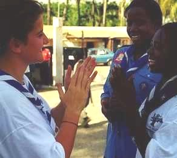

World Organization of the Scout Movement


 What is a Culture of Peace?
For you today, and for your Scout Group, find eight keys and discover eight attitudes. These eight values can change the world!
The medias play an important role in our life. Go to the pages on medias in order to know how they influence Culture of Peace.
Then, you will play the activities.